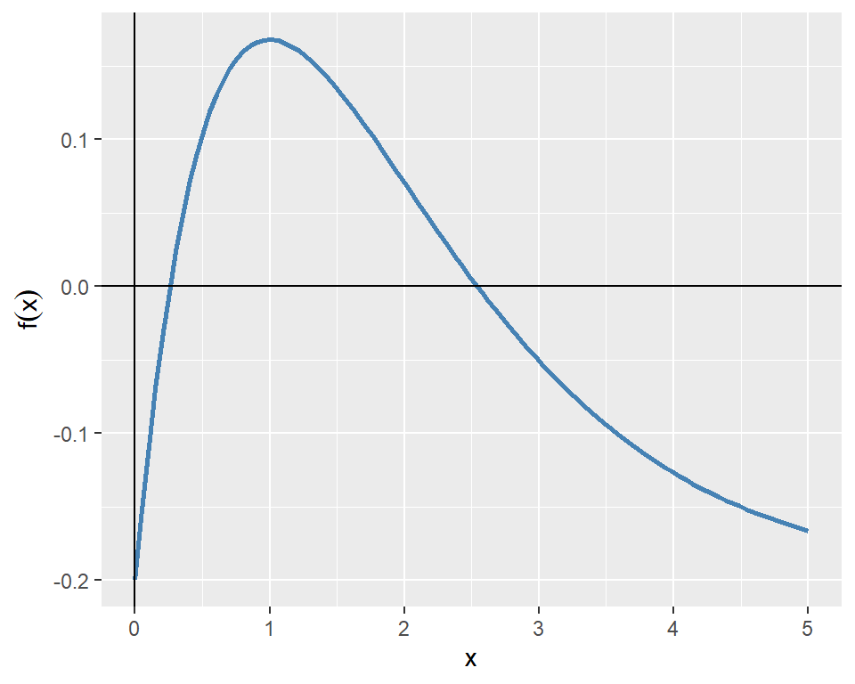
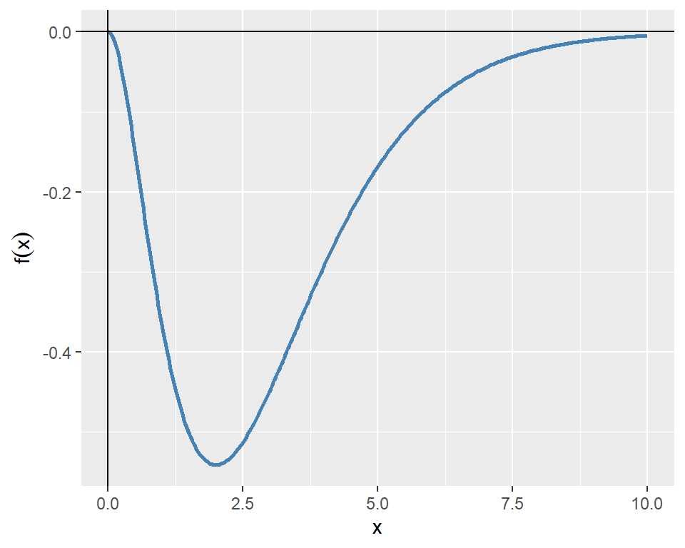
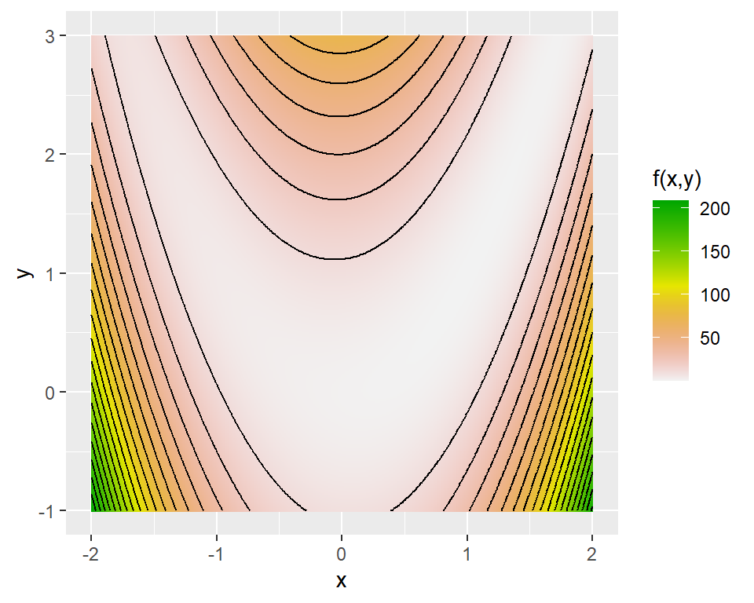
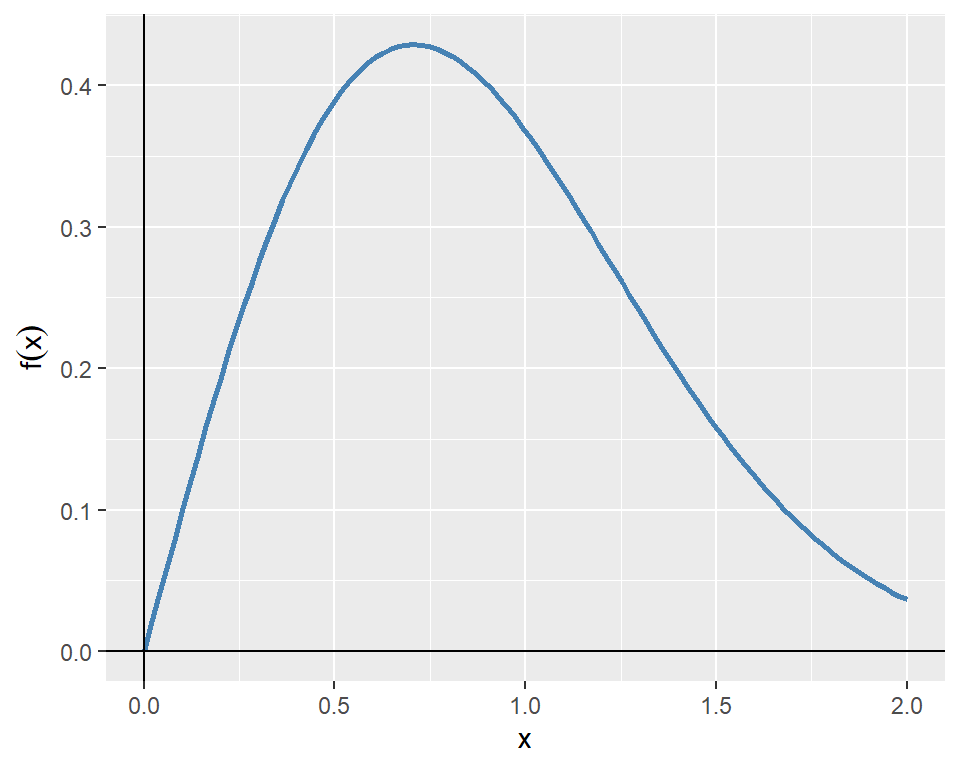
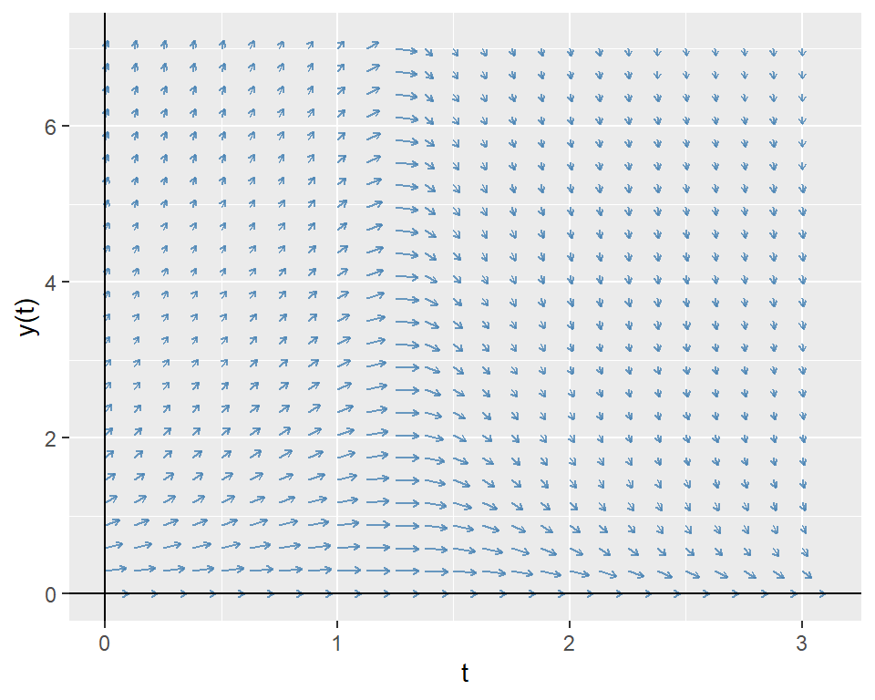
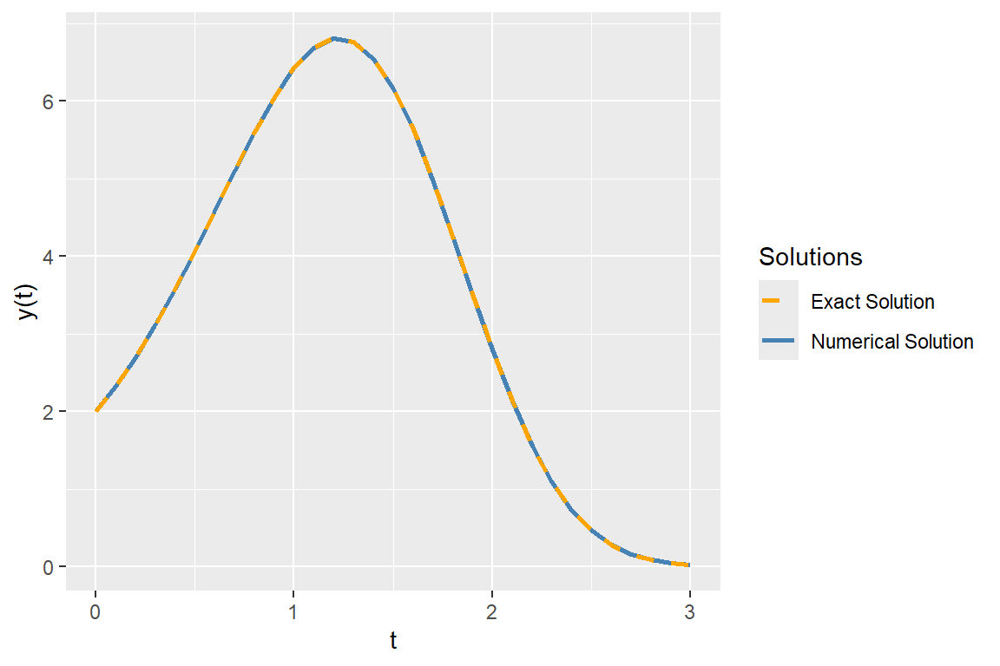
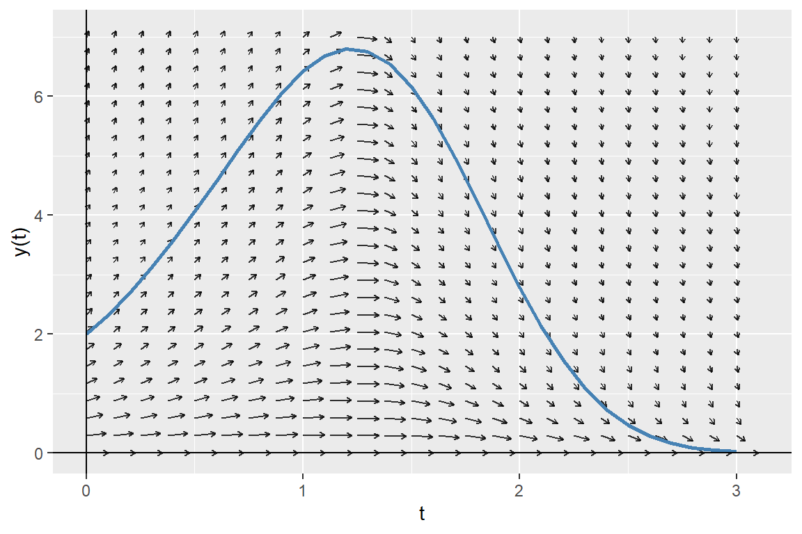

# Load necessary libraries
library(tidyverse)
library(reshape2)
library(plotly)
library(rootSolve)
library(pracma)
library(deSolve)8 Applications in Numerical Analysis
8.1 Introduction
In this chapter, we cover frequently used numerical methods for solving mathematical problems in statistics and econometrics. We focus on root finding, optimization, numerical integration, and solving ordinary differential equations (ODEs).
8.2 Root finding
In root finding, we aim to find a value \(x^*\) such that \(f(x^*)=0\) for a given function \(f(x)\). In R, we can use the uniroot function from the stats package for one-dimensional root finding problems and the multiroot function from the rootSolve package for multi-dimensional root finding problems. The syntax for the uniroot function is as follows:
uniroot(f, interval, ...,
lower = min(interval), upper = max(interval),
f.lower = f(lower, ...), f.upper = f(upper, ...),
extendInt = c("no", "yes", "downX", "upX"), check.conv = FALSE,
tol = .Machine$double.eps^0.25, maxiter = 1000, trace = 0)Some of the arguments that we need to supply to the uniroot function are listed below.
f: The function for which we want to find a root.interval: A vector of length 2 specifying the interval that contains a root of the function.tol: The desired accuracy of the root.maxiter: The maximum number of iterations to be performed....: Additional arguments to be passed to the functionf.lower,upper: The lower and upper bounds of the interval.
As an example, we consider the following function: \[ f(x)=xe^{-x}-0.2. \]
The plot of the function given in Figure 8.1 indicates that the function passes through the x-axis at two points. Therefore, the function has two roots over the interval \([0, 5]\).
# Plot the function f(x) = -x^2 * exp(-x)
# Generate data
x <- seq(0, 5, length.out = 100)
y <- x * exp(-x) - 0.2
data <- data.frame(x = x, y = y)
# Plot using ggplot2
ggplot(data, aes(x = x, y = y)) +
geom_line(color = "steelblue", linewidth = 1) +
geom_hline(yintercept = 0, color = "black", linewidth = 0.5) +
geom_vline(xintercept = 0, color = "black", linewidth = 0.5) +
labs(x = "x", y = expression(f(x)))
In the following, we first find the root in the interval \([0, 2]\) and then in the interval \([2, 5]\).
# Define the function
f <- function(x) {
x * exp(-x) - 0.2
}
# Find the root in the interval [0, 5]
root1 <- uniroot(f, interval = c(0, 2))
# Print the results
cat("Root found at x =", round(root1$root, 4), "\n")Root found at x = 0.2592 cat("f(x) at root =", round(root1$f.root, 4), "\n")f(x) at root = 0 # Find another root in the interval [2, 5]
root2 <- uniroot(f, interval = c(2, 5))
cat("Root found at x =", round(root2$root, 4), "\n")Root found at x = 2.5426 cat("f(x) at root =", round(root2$f.root, 4), "\n")f(x) at root = 0 When there are multiple equations to be solved simultaneously for multiple roots, we can use the multiroot function from the rootSolve package. The syntax for the multiroot function is as follows:
multiroot(f, start, maxiter = 100,
rtol = 1e-6, atol = 1e-8, ctol = 1e-8,
useFortran = TRUE, positive = FALSE,
jacfunc = NULL, jactype = "fullint",
verbose = FALSE, bandup = 1, banddown = 1,
parms = NULL, ...)Some of the arguments that we need to supply to the multiroot function are listed below.
f: A function that takes a vector of unknown parameters and returns a vector of function values.start: A vector of initial values of the unknown parameters.maxiter: The maximum number of iterations to be performed.verbose: IfTRUE, the function prints information about the iterations.
As an example, we consider the following system of equations: \[ \begin{align*} x^2+y^2-4 & =0, \\ e^x+y-1 & =0. \end{align*} \]
We define first define a function that returns the left-hand side of the equations as a vector for a given vector of unknown parameters. We then use the multiroot function to find the values of \(x\) and \(y\) that satisfy both equations simultaneously.
# Define the system of equations
system_eq <- function(vars) {
x <- vars[1]
y <- vars[2]
eq1 <- x^2 + y^2 - 4
eq2 <- exp(x) + y - 1
return(c(eq1, eq2))
}
# Initial guess
start_vals <- c(1, 1)
# Solve the system of equations
solution <- multiroot(system_eq, start = start_vals)
# Print the results
cat("Solution found:\n")Solution found:cat("x =", round(solution$root[1], 4), "\n")x = -1.8163 cat("y =", round(solution$root[2], 4), "\n")y = 0.8374 8.3 Optimization
In optimization, we seek to find the value of \(x\) that minimizes or maximizes a given objective function \(f(x)\). In R, we can use the optimize function for one-dimensional optimization problems and the optim function for multi-dimensional optimization problems. Both functions are part of the stats package.
As an example, we consider the following one-dimensional function: \[ f(x)=-x^2e^{-x}. \]
The plot of the function over the interval \([0, 10]\) is shown in Figure 8.2. The plot indicates that the function has a minimum point near \(x=2\).
# Plot the function f(x) = -x^2 * exp(-x)
# Generate data
x <- seq(0, 10, length.out = 400)
y <- -x^2 * exp(-x)
# Plot using ggplot2
ggplot(data.frame(x = x, y = y), aes(x = x, y = y)) +
geom_line(color = "steelblue", linewidth = 1) +
geom_hline(yintercept = 0, color = "black", linewidth = 0.5) +
geom_vline(xintercept = 0, color = "black", linewidth = 0.5) +
labs(x = "x", y = expression(f(x)))
The following chunk indicates that the function has a minimum point at \(x^*=2\) with a minimum value of approximately \(f(x^*)=-0.5413\).
# Define the objective function
f <- function(x) {
-x^2 * exp(-x)
}
# Minimize the function within the interval [0, 10]
result <- optimize(f, interval = c(0, 10), maximum = FALSE)
# Print the results
cat("x that minimizes f(x):", round(result$minimum, 4), "\n")x that minimizes f(x): 2 cat("Minimum value of f(x):", round(result$objective, 4), "\n")Minimum value of f(x): -0.5413 For multi-dimensional optimization problems, we can use the optim function. The syntax for the optim function is as follows:
optim(par, fn, gr = NULL, ..., method = c("Nelder-Mead", "BFGS",
"CG", "L-BFGS-B", "SANN", "Brent"), lower = -Inf,
upper = Inf, control = list(), hessian = FALSE)Some of the arguments that we need to supply to the optim function are listed below.
par: A vector of initial values of the unknown parameters.fn: The objective function to be minimized.method: The optimization algorithm to be used. The default is"Nelder-Mead". Other options include"BFGS","CG","L-BFGS-B",“SANN”, and“Brent”`.lower,upper: Vectors specifying the lower and upper bounds for the parameters. These arguments are only used when the method is"L-BFGS-B"or"Brent".hessian: IfTRUE, the function returns the Hessian matrix at the solution.
As an example, we consider the Rosenbrock function, which is widely used for testing optimization algorithms. The Rosenbrock function is defined as: \[ f(x,y)=(a-x)^2+b(y-x^2)^2. \]
The function has a global minimum at \((x,y)=(a,a^2)\), where \(f(x,y)=0\). In the example below, we set \(a=1\) and \(b=8\), so that the global minimum is at \((1,1)\). Figure 8.3 shows the contour plot of the Rosenbrock function, while Figure 8.4 presents a 3D surface plot of the function.
# Define the Rosenbrock function
rosen <- function(x, y) {
(1 - x)^2 + 8 * (y - x^2)^2
}
# Create a grid of points
x <- seq(-2, 2, length.out = 400)
y <- seq(-1, 3, length.out = 400)
grid <- expand.grid(x = x, y = y)
grid$z <- with(grid, rosen(x, y))
# Plot using ggplot2
ggplot(grid, aes(x = x, y = y, fill = z)) +
geom_raster() +
geom_contour(aes(z = z), color = "black", bins = 20) +
scale_fill_gradientn(colors = rev(terrain.colors(20))) +
labs(x = "x", y = "y", fill = "f(x,y)")
# Initialize figure
# Create grid
x <- seq(-2, 2, by = 0.15)
y <- seq(-1, 3, by = 0.15)
Z <- outer(x, y, Vectorize(function(x, y) (1 - x)^2 + 8 * (y - x^2)^2))
# 3D surface plot
plot_ly(x = ~x, y = ~y, z = ~Z) %>%
add_surface(colorscale = "steelblue") %>%
layout(scene = list(
zaxis = list(range = c(0, 200)),
xaxis = list(title = "x"),
yaxis = list(title = "y"),
zaxis = list(title = "f(x,y)")))Next, we use the optim function to find the values of \(x\) and \(y\) that minimize the Rosenbrock function. We start with an initial guess of \((x,y)=(0,0)\) and use the BFGS algorithm to find the minimum.
# Define the objective function (Rosenbrock function)
rosen <- function(theta) {
(1 - theta[1])^2 + 8 * (theta[2] - theta[1]^2)^2
}
# Initial guess
theta0 <- c(0, 0)
# Minimize the function using BFGS
result <- optim(theta0, rosen, method = "BFGS")
# The minimizing values of x and y
round(result$par, 3)[1] 1 1# The value of the function at the minimum
round(result$value, 4)[1] 0# Check convergence (0 means success)
result$convergence[1] 0The output indicates that the function has a minimum point at \((x^*,y^*)=(1,1)\) with a minimum value of \(f(x^*,y^*)=0\). The convergence code of 0 indicates that the optimization was successful.
8.4 Numerical integration
In R, we can use the integrate function from the stats package to perform numerical integration of one-dimensional functions. The syntax for the integrate function is as follows:
integrate(f, lower, upper, ..., subdivisions = 100L,
rel.tol = .Machine$double.eps^0.25,
abs.tol = rel.tol, stop.on.error = TRUE,
keep.xy = FALSE)where f is the function to be integrated, lower and upper are the limits of integration, and ... are additional arguments to be passed to the function f.
As an example, we consider the following function: \[ f(x)=xe^{-x^2}. \]
The plot of the function over the interval \([0, 2]\) is shown in Figure 8.5.
# Plot the function f(x) = x * exp(-x^2)
# Generate data
x <- seq(0, 2, length.out = 100)
y <- x * exp(-x^2)
# Plot using ggplot2
ggplot(data.frame(x = x, y = y), aes(x = x, y = y)) +
geom_line(color = "steelblue", linewidth = 1) +
geom_hline(yintercept = 0, color = "black", linewidth = 0.5) +
geom_vline(xintercept = 0, color = "black", linewidth = 0.5) +
labs(x = "x", y = expression(f(x)))
The following chunk computes the definite integral of the function over the interval \([0, 2]\).
# Define the function
f <- function(x) {
x * exp(-x^2)
}
# Compute the definite integral from 0 to 2
result <- integrate(f, lower = 0, upper = 2)
# Print the result
cat("The definite integral of f from 0 to 2 is", round(result$value, 4))The definite integral of f from 0 to 2 is 0.4908For double and triple integrals, we can use the pracma package. The integral2 function can be used for double integrals, while the integral3 function can be used for triple integrals. The syntax for the integral2 function is as follows:
integral2(fun, xmin, xmax, ymin, ymax, sector = FALSE,
reltol = 1e-6, abstol = 0, maxlist = 5000,
singular = FALSE, vectorized = TRUE, ...)where fun is the function to be integrated, xmin and xmax are the limits of integration for the first variable, and ymin and ymax are the limits of integration for the second variable.
Suppose that the random variables \(Y_1\) and \(Y_2\) have the joint probability density function \(f (y_1, y_2)\) given by \[ \begin{align*} f(y_1,y_2)= \begin{cases} 30y_1y^2_2,\quad y_1-1\leq y_2\leq 1-y_1, 0\leq y_1\leq1,\\ 0,\quad\text{elsewhere}. \end{cases} \end{align*} \]
Let \(F_{Y_1,Y_2}(y_1,y_2)\) be the joint cumulative distribution function (CDF) of \(Y_1\) and \(Y_2\). We want to compute (i) \(F_{Y_1,Y_2}(0.5,0.5)\) and (ii) the probability \(P(Y_1>Y_2)\). We can express \(F_{Y_1,Y_2}(0.5,0.5)\) as a double integral: \[ F_{Y_1,Y_2}(0.5,0.5)=\int_0^{0.5}\int_{y_1-1}^{0.5}30y_1y^2_2\,\text{d}y_2\,\text{d}y_1. \]
We can compute the value of the double integral using the integral2 function as follows:
# Define the joint PDF
joint_pdf <- function(y1, y2) {
30 * y1 * y2^2
}
# Compute the joint CDF F_Y1,Y2(0.5, 0.5)
result_cdf <- integral2(joint_pdf, xmin = 0, xmax = 0.5,
ymin = function(y1) y1 - 1,
ymax = 0.5)
# Print the result
cat("F_Y1,Y2(0.5, 0.5) =", round(result_cdf$Q, 4))F_Y1,Y2(0.5, 0.5) = 0.56258.5 Ordinary differential equations (ODEs)
Let \(y(t)\) be a function of \(t\). An ordinary differential equation (ODE) is an equation that relates the function \(y(t)\) to its derivatives. The general form of a first-order ODE is given by \[ \frac{dy(t)}{dt}=f(t,y(t)), \] where \(f(t,y(t))\) is a given function. The second-order ODE can be expressed as \[ \frac{d^2y(t)}{dt^2}=g\left(t,y(t),\frac{dy(t)}{dt}\right). \]
The higher-order ODE can be converted into a system of first-order ODEs. For example, the second-order ODE can be rewritten as a system of first-order ODEs by introducing a new variable \(v(t)=\frac{dy(t)}{dt}\). This gives us the following system: \[ \begin{align*} \frac{dy(t)}{dt} &= v(t), \\ \frac{dv(t)}{dt} &= g(t,y(t),v(t)). \end{align*} \]
In R, we can use the ode function from the deSolve package to solve ODEs numerically. The syntax for the ode function is as follows:
ode(y, times, func, parms,
method = c("lsoda", "lsode", "lsodes", "lsodar", "vode", "daspk",
"euler", "rk4", "ode23", "ode45", "radau",
"bdf", "bdf_d", "adams", "impAdams", "impAdams_d", "iteration"), ...)Some of the arguments that we need to supply to the ode function are listed below.
y: A vector of initial values of the unknown parameters.times: A vector of time points at which the solution is to be computed.func: A function that computes the derivatives of the unknown parameters.parms: A vector of parameters to be passed to the functionfunc.method: The numerical method to be used for solving the ODE. The default is"lsoda".
As an example we consider the following first-order ODE: \[ \frac{dy(t)}{dt}=-yt^2+1.5y,\quad y(0)=2,\quad 0\leq t\leq 3. \]
The directional field of the ODE shows the slope of the solution curve at each point in the \(t\)-\(y\) plane. That is, it shows the slope \(\frac{dy(t)}{dt}=-yt^2+1.5y\) at each point \((t,y)\). Below, we first create a grid of points in the \(t\)-\(y\) plane and then compute the slope at each point with grid$slope <- with(grid, -y * t^2 + 1.5 * y). We then normalize the slope vectors to have unit length and then use the geom_segment to plot the direction field.
# Define parameters
tmin <- 0; tmax <- 3
ymin <- 0; ymax <- 7
nt <- 25; ny <- 25
t <- seq(tmin, tmax, length.out = nt)
y <- seq(ymin, ymax, length.out = ny)
grid <- expand.grid(t = t, y = y)
# Define slope and normalize
grid$slope <- with(grid, -y * t^2 + 1.5 * y)
N <- sqrt(1 + grid$slope^2)
grid$U <- 1 / N
grid$V <- grid$slope / N
# Plot using ggplot2
ggplot(grid, aes(x = t, y = y)) +
geom_segment(aes(xend = t + 0.1*U, yend = y + 0.1*V),
arrow = arrow(length = unit(0.1, "cm")),
color = "steelblue", alpha = 0.8) +
geom_hline(yintercept = 0, color = "black", linewidth = 0.5) +
geom_vline(xintercept = 0, color = "black", linewidth = 0.5) +
labs(x = "t", y = "y(t)")
Our ODE is a first-order linear ODE. The general form of a first-order linear ODE is given by \[ \frac{dy(t)}{dt}+a(t)y(t)=b(t), \] where \(a(t)\) and \(b(t)\) are given functions. To prove the solution, we use the integrating factor method.
Multiply both sides by \(e^{\int a(t)dt}\) (the integrating factor): \[ e^{\int a(t)dt}\frac{dy(t)}{dt}+a(t)y(t)e^{\int a(t)dt}=b(t)e^{\int a(t)dt}. \]
The left side can be rewritten as the derivative of a product: \[ \frac{d}{dt}\left(y(t)e^{\int a(t)dt}\right)=b(t)e^{\int a(t)dt}. \]
Integrate both sides: \[ y(t)e^{\int a(t)dt}=\int b(t)e^{\int a(t)dt}dt+C. \]
Solve for y(t): \[ y(t)=e^{-\int a(t)dt}\left(\int b(t)e^{\int a(t)dt}dt+C\right), \tag{8.1}\] where \(C\) is a constant determined by the initial condition.
In our case, \(a(t)=t^2-1.5\) and \(b(t)=0\). Therefore, the exact solution of the ODE is given by \(y(t)=2e^{-(2t^3-9t)/6}\). We will compare this exact solution with the numerical solution obtained using the ode function. We first define a function that computes the derivative of \(y(t)\) and then use the ode function to solve the ODE numerically.
# Define the derivative function
ode_func <- function(t, y, parms) {
dydt <- -y * t^2 + 1.5 * y
list(dydt)
}
# Initial condition
y0 <- 2
# Time points
times <- seq(0, 3, by = 0.1)
# Solve the ODE numerically
ode_solution <- ode(y = y0, times = times, func = ode_func, parms = NULL)In the following figure, we plot the numerical solution obtained using the ode function together with the exact solution. The plot shows that the numerical solution closely matches the exact solution.
# Convert to data frame
ode_df <- as.data.frame(ode_solution)
colnames(ode_df) <- c("time", "y")
# Exact solution
ode_df$exact <- 2 * exp(-(2 * ode_df$time^3 - 9 * ode_df$time) / 6)
# Plot the numerical and exact solutions
ggplot(ode_df, aes(x = time)) +
geom_line(aes(y = y, color = "Numerical Solution"), linewidth = 1) +
geom_line(aes(y = exact, color = "Exact Solution"), linetype = "dashed", linewidth = 1) +
labs(x = "t", y = "y(t)", color = "Solutions") +
scale_color_manual(values = c("Numerical Solution" = "steelblue", "Exact Solution" = "orange"))
In the following figure, we plot the numerical solution together with the direction field of the ODE. The plot shows that the slope of the numerical solution follows the direction of arrows.
# Plot using ggplot2
ggplot() +
geom_segment(data = grid, aes(x = t, y = y, xend = t + 0.1*U, yend = y + 0.1*V),
arrow = arrow(length = unit(0.1, "cm")),
color = "black", alpha = 0.8) +
geom_line(data = ode_df, aes(x = time, y = y), color = "steelblue", linewidth = 1) +
geom_hline(yintercept = 0, color = "black", linewidth = 0.5) +
geom_vline(xintercept = 0, color = "black", linewidth = 0.5) +
labs(x = "t", y = "y(t)")
8.6 Further reading
For further reading on numerical methods, we suggest Judd (1998) and Bloomfield (2014).